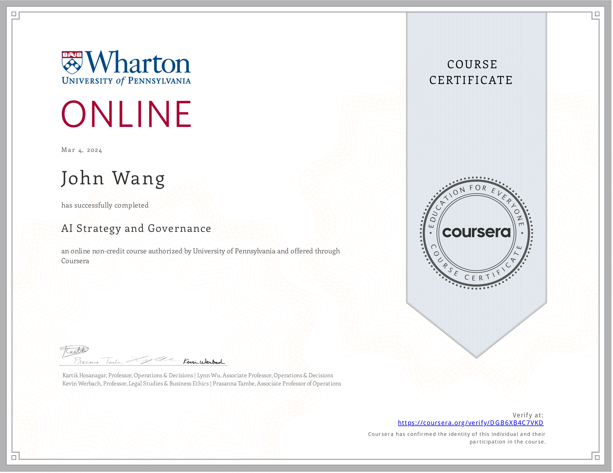
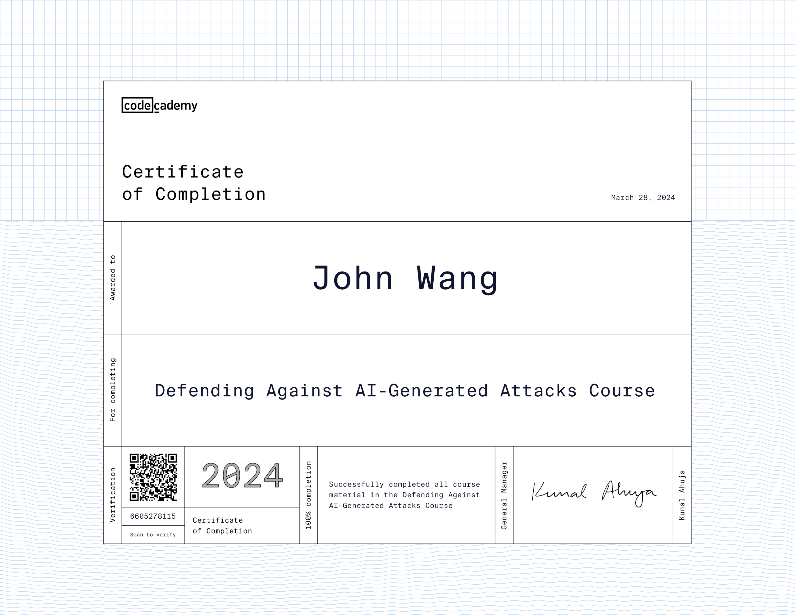
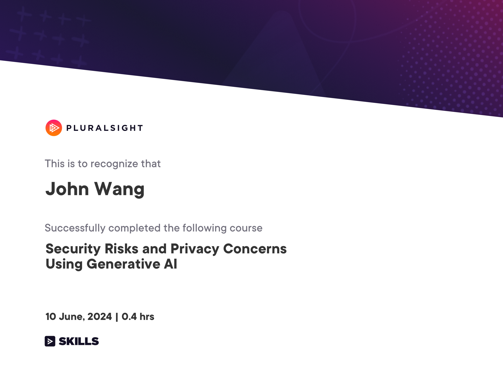
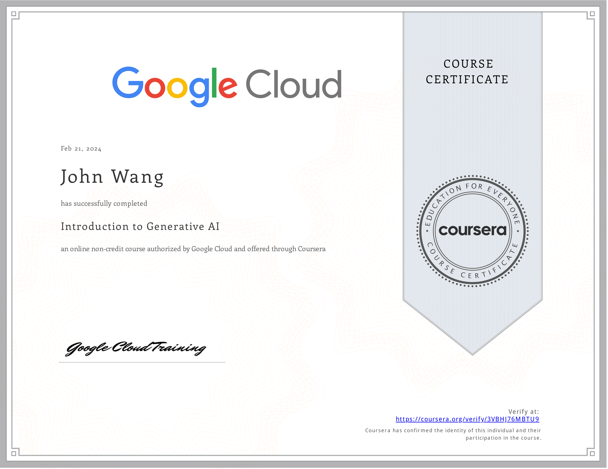
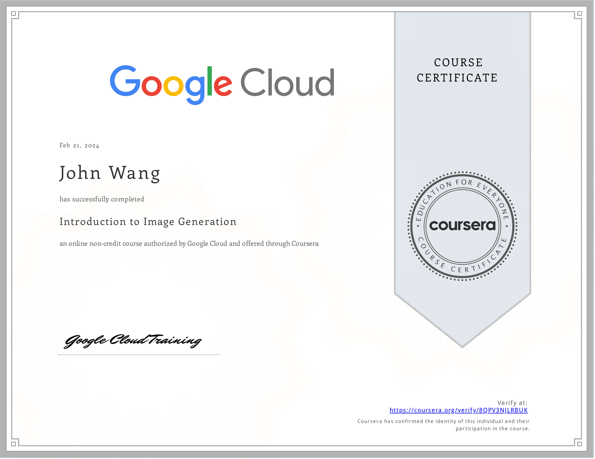
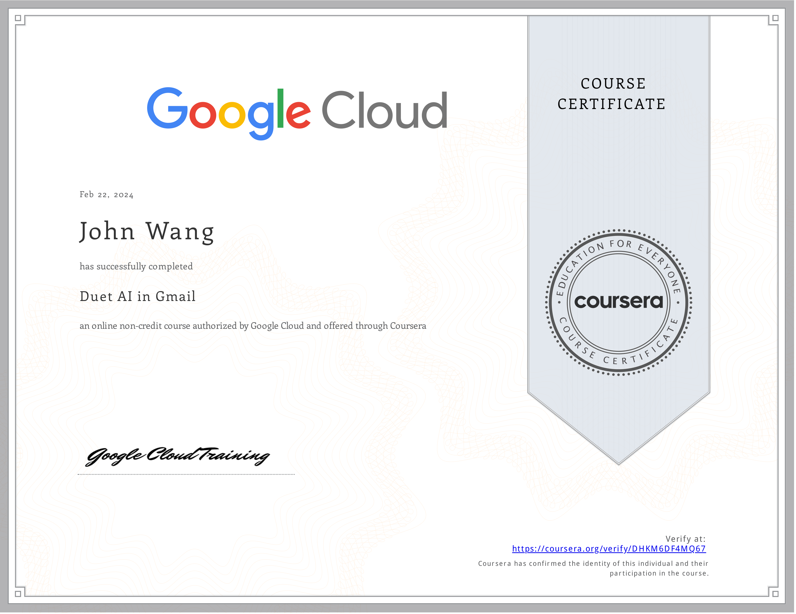
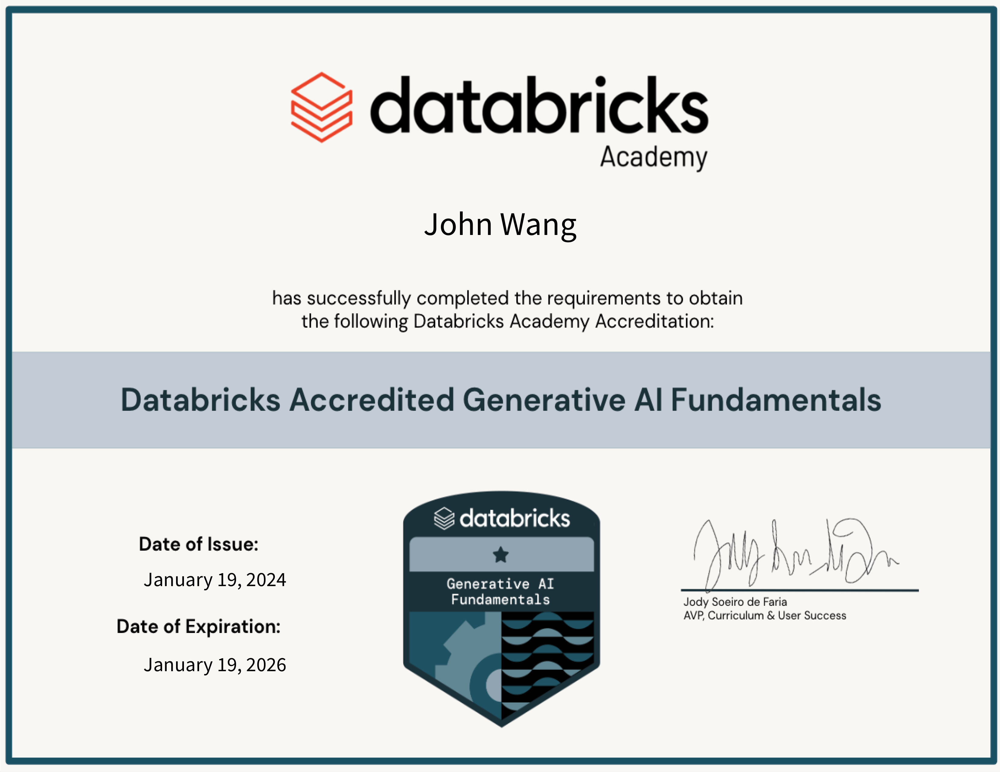

John's Artificial Intelligence Certificates
- Strategy
- Product Management
- Security
- Governance
- Generative AI
- Introduction to Generative AI from Google Cloud
- Introduction to Large Language Models from Google Cloud
- Introduction to Image Generation from Google Cloud
- Duet AI in Gmail from Google Cloud
- AI Prompting Essentials Certified (AIPEC) from Management and Strategy Institute
- ChatGPT for Excel from Great Learning Academy by E. Balachandra Murthy
- Databricks Accredited Generative AI Fundamentals from Databricks
Strategy (1)
AI Strategy and Governance from University of Pennsylvania, Wharton School

Product Management (1)
AI for Product Management from Pendo

Security (3)
Defending Against AI-Generated Attacks from Codecademy

Security Risks and Privacy Concerns Using Generative AI from Pluralsight by Dr. Shaila Rana

AI Security from Lakera
Governance (1)
Introduction to Responsible AI from Google Cloud
Generative AI (7)
Introduction to Generative AI from Google Cloud

Introduction to Large Language Models from Google Cloud
Introduction to Image Generation from Google Cloud

Duet AI in Gmail from Google Cloud

AI Prompting Essentials Certified (AIPEC) from Management and Strategy Institute
ChatGPT for Excel from Great Learning Academy by E. Balachandra Murthy
Databricks Accredited Generative AI Fundamentals from Databricks
